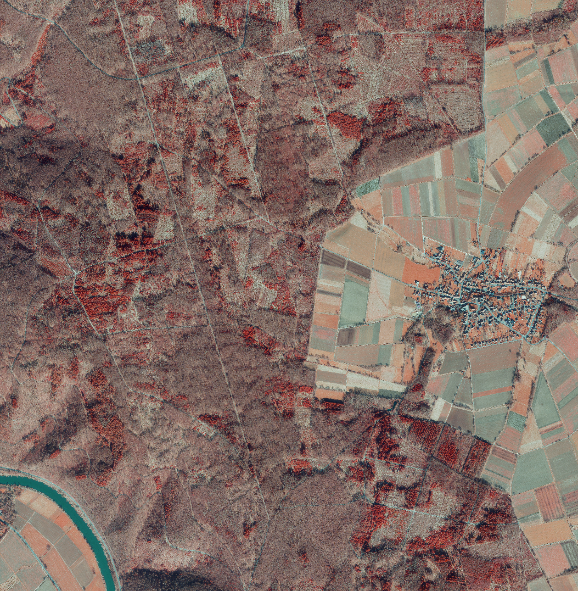
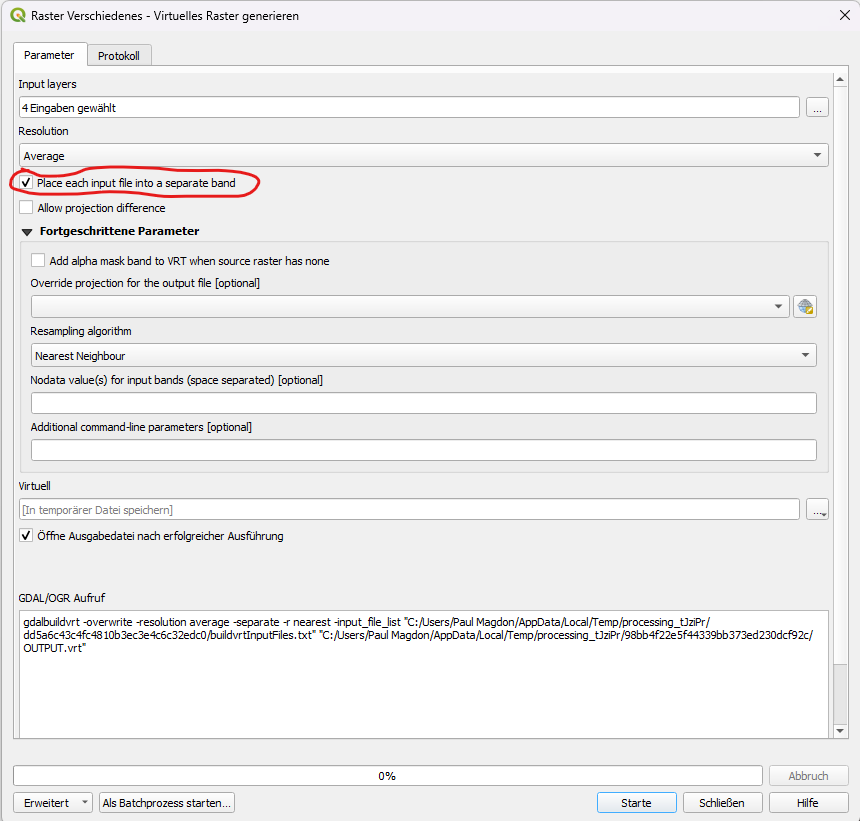
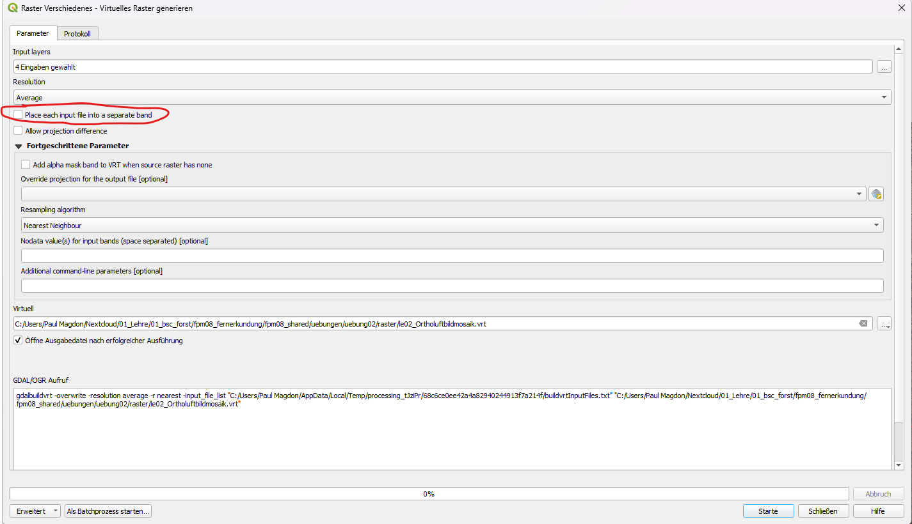

2 Lerneinheit 02: Erstellen eines Ortholuftbildmosaiks in der Rfö Kattenbühl

2.1 Lernziele & Aufgabenstellung
Viele Fernerkundungsdaten werden in Form von Rasterdaten gespeichert, welche in einem regelmäßigen Raster aus Zellen/Pixel organisiert sind. In jedem Pixel wird genau ein Zahlenwert gespeichert. Typische Dateiformate für Rastergeodaten sind GeoTIFF (.tif), ArcInfo ASCI (.ascii), Geopackage (*.gpkg) und ERDAS Imagine (*.img).
In der Übung soll der Umgang mit Rasterdaten vorgestellt und geübt werden. Dazu soll für die Nds. Rfö. Kattenbühl eine Ortholuftbildmosaik erstellt und mit unterschiedlichen Optionen visualisiert werden. In der Übung wird vorgestellt wie Rasterdaten in QGIS importiert werden können. Wie die Eigenschaften von Rasterdaten untersucht werden und wie Rasterdaten visualisiert werden können. Außerdem wird vorgestellt wie aus einzelnen Kanälen Mehrkanalbilder erstellt werden können und wie diese dann in einem virtuellen Bildmosaik zusammengeführt werden.
Lernziele
Die Studierenden sollen:
- verschiedene Rasterdatenformate kennenlernen
- Rasterdaten in QGIS importieren
- Eigenschaften von Rasterdaten in QGIS untersuchen und manipulieren können
- Mehrkanalbilder und Bildmosaike mithilfe von virtuellen Rastern erstellen können
- unterschiedliche Visualisierungsmethoden für Ein- und Mehrkanalrasterbilder nutzen können
Aufgaben
Importieren sie die einzelnen Kanäle der Ortholuftbilder und untersuchen sie die Rastereigenschaften
Fügen sie die einzelnen Kanäle zu einem virtuellen Mehrkanalbild zusammen.
Erstellen sie ein virtuelles Orthobildmosaik
Erstellen sie eine echt- und eine falschfarben Darstellungen
2.2 Anlegen eine neuen QGIS-Projektes
Folgen sie der Anleitung aus Kapitel 1.3 um eine neue Ordnerstruktur und ein neues QGIS-Projekt für LE02 anzulegen.
2.3 Import der Ortholuftbilder
Die Ortholuftbilder werden als GeoTiff-Dateien getrennt in den einzelnen Bändern (b1-b4) zur Verfügung gestellt. Für die Übung arbeiten wir mit vier Bildern á vier Kanäle, so dass 16 Raster importiert werden. Um den Import übersichtlich zu gestalten, empfiehlt es sich für jedes Bild zunächst im Layer-Panel und im raster-Ordner des Projektes einen Ordner/ Gruppe für jedes Bild (bild_1, bild_2, …) anzulegen. Kopieren Sie sich die Daten der Übung dazu vom Netzlaufwerk in ihren Projektordner. Die einzelnen Rasterdatei können dann entweder per drag & drop aus dem Windows-Explorer oder über das Import-Menü zu den Layer-Gruppen hinzugefügt werden.
Layer → Datenquellenverwaltung → Raster → File
Importieren sie für jedes Bild die vier Kanäle (b1-b4). Nutzen sie anschließend die Layereigenschaften der Raster um folgende Fragen zu beantworten:
Fragen:
Wie viele Pixel hat ein Kanal?
Welche räumlichen Auflösungen haben die Rasterbilder?
Welches Koordinatenreferenzsystem haben die Rasterbilder?
Was ist der kleinste und der größte Zahlenwert der Rasterbilder?
2.4 Erstellen von Mehrkanalbildern
Nach dem Import der einzelnen Kanäle werden diese in QGIS als Graustufenbilder dargestellt. Damit QGIS diese als Farbbilder darstellen kann, müssen alle Kanäle eines Raster zusammengeführt werden. Dafür gibt es unterschiedliche Optionen. Eine Variante wäre das speichern aller Kanäle in eine neue Rasterdatei mit vier Kanälen. In diesem Fall würden wir aber eine Kopie der Daten anlegen und bräuchten den doppelten Speicherplatz. Eine effiziente Methode um das kopieren von Daten zu verhindern ist es mit virtuellen Rastern zu arbeiten. Dazu wird das GDAL-VRT Formate bereitgestellt (siehe: https://gdal.org/en/stable/drivers/raster/vrt.html). Ein virtuelles Raster ist eine kleine Textdatei im XML-Format in der die Pfade und Einstellungen der einzelnen Raster hinterlegt sind. QGIS kann diese Textdateien einlesen und diese Raster dann wie ein Mehrkanalbild verarbeiten.
Erstellen sie für jedes der vier Bilder ein VRT-Datei in dem jeweiligen Bildordner.
Verarbeitung →Werkzeugkiste → Virtuelles Raster generieren → Raster → File

Im ersten Schritt werden unter Input layers die vier Bänder ausgewählt. wichtig ist hier das die Reihenfolge der Bänder aufsteigend angezeigt wird (b1,b2,b3,b4). Sollte das nicht der Fall sein kann die Reihenfolge per drag&drop in dem Menü entsprechend angepasst werden. Da mehrerer Bänder zusammengeführt werden ist es wichtig, dass die Option “Place each input file into a separate band” aktiviert wird. Unter Virtuell wird die Ausgabedatei angegeben. Diese sollte z.B. LE02/raster/bild_1/bild_1_mehrkanal.vrt heißen.
2.5 Echt- und falschfarben Darstellungen von Luftbildern
Nach dem ein Mehrkanalraster als virtuelle Datei angelegt wurde, stellt QGIS diese sofort als Farbbild dar. Dabei nutzt QGIS die Standardeinstellungen für Raster und interpretiert die Bänder wie folgt:
Band 1: blau; Band 2: grün; Band 3: rot.
Echtfarben Darstellung
Wenn die spektralen Bereiche den entsprechenden Farben zugeordnete werden, also blau zu blau, grün zu grün und rot zu rot, wird das Raster in den echten Farben dargestellt. In vorliegenden Fall ist das bereits korrekt und führt automatisch zu einer Echtfarbendarstellung. Dies muss jedoch nicht immer der Fall sein. Daher ist es wichtig, die Zuordnung der Bänder zu den Farben in den Layereigenschaften zu überprüfen. Dazu mit Rechtsklick auf den jeweiligen VRT-Layer:
Eigenschaften → Symbolisierung → Darstellungsart → Multikanal Farbe
Hier wird angezeigt, welcher Kanal für rot, grün und für blau verwendet wird.
Color-Infrarot (CIR) Darstellung
Zur Beobachtung von Wäldern und Pflanzen werden häufig falschfarben Darstellungen gewählt. Sie zeigen nicht die Farben wie sie in der Realität vorgefunden werden, sonden machen besonders Unterschiede in der Vegetation sichtbar. Dazu wird häufig der rote Kanal mit den Reflexionsdaten aus dem Nahen Infrarot Spektrum ersetzt.
QGIS bietet die Möglichkeit für jeden Layer mehrere Symbolisierungen zu hinterlegen. Dadurch ist es dann möglich sehr einfach zwischen unterschiedlichen Ansichten zu wechseln. Um ein weitere Symbolisierung für einen Layer anzulegen klicken wir mit der rechten Maustaste auf einen Layer und wählen:
Stil → Stil hinzufügen → Name: CIR
Anschließend öffnen wie wieder die Symbolisierung des Layers und wählen in der multikanal Darstellung für den roten Kanal das Band 4 (NIR) aus. Dadurch wird nun eine CIR-Falschfarben Darstellung angezeigt.
Frage:
Wie unterscheiden sich die Echtfarben- und die CIR-Darstellung?
Welche Objekte können Sie in der CIR-Darstellung besser erkennen, welche schlechter?
2.6 Erstellen eine Ortholuftbildmosaiks
Die Ortholuftbilder werden, wie die meisten Rasterdaten, in sogenannten Kacheln (engl. tiles) z.B. mit einer Größe von 2000 m x 2000 m ausgeliefert. In der Übung haben vier solche Kacheln vorliegen. Zur Abdeckung größere Gebiete werden meistens mehrere Kacheln benötigt. Besonders für große Gebiete kann das sehr aufwendig werden, da die Einstellungen z.B. der Darstellung für jede Kachel einzeln angepasst werden muss. Daher ist es sinnvoll die Kacheln eines zusammenhängenden Gebietes zusammenzuführen. Diese Zusammenstellung mehrere Bilder die räumlich benachbart sind, bezeichnet man in der Fernerkundung häufig als Bildmosaik. QGIS bietet unterschiedliche Möglichkeiten Bildmosaike zu erstellen. Ein Option wäre es mehrere Kacheln zusammenzuführen und als neue GeoTiff-Datei abzuspeichern. Diese hätte den Vorteil, dass wir für das jeweilige Gebiet nur noch eine Datei hätten. Es gibt bei diesem Vorgehen allerdings mehrere Nachteile. Je nach Gebietsgröße werden die Dateien sehr groß. Das kann dann zu sehr langen Ladezeiten führen, wenn man in das Bild zoomt. Außerdem würde auch wieder eine Kopie der Daten angelegt, was zu einem größeren Speicherplatzbedarf führt. Alternativ kann auch für dieses Problem ein virtuelles Raster verwendet werden. Anders als im oberen Abschnitt nutzen wir diese Funktion nun um benachbarten Bilder zusammenzuführen. Voraussetzung dafür ist, dass die Bilder das selbe Koordinatenreferenzsystem nutzen, die räumliche Auflösung und die Anzahl der Bänder identisch ist.
Zum Erstellen eines VRT-Mosaiks nutzen wie wieder:
Verarbeitung →Werkzeugkiste → Virtuelles Raster generieren → Raster → File
Diesmal wählen wir als Input die vier Mehrkanalbilder (VRTs) die wir bereits erzeugt haben. Als Ausgabe definieren wir das VRT le02_Ortholuftbildmosaik.vrt, welches wir im Rasterordner ablegen.

Da wir die einzelnen Bilder nebeneinander anordnen wollen wählen wir hier nicht die Option “Place each input file into a speate band”.
Als Ergebnis haben wir nun eine VRT-Datei mit der wir gleichzeitig alle Kanäle und alle Bilder darstellen können. Dies ermöglicht es nun sehr einfach auch die Darstellung aller Bilder gleichzeitig und einheitlich anzupassen. Legen sie dazu wie oben beschrieben für das Orthomosaik einen neuen Stil ‘CIR’ an und stellen sie das Mosaik hier als CIR-Abbildung dar.